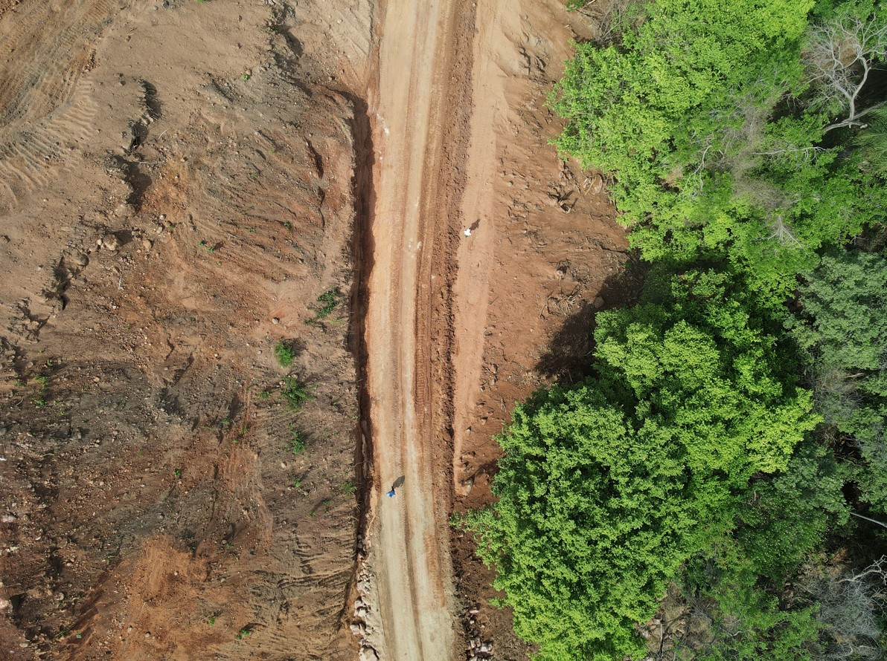

Geotecnia
A importância das investigações geotécnicas em barragens
Entenda como os estudos geotécnicos contribuem para segurança e estabilidade de barragens.
Ler artigo
Taludes
Tratamento e estabilização de taludes rochosos
Técnicas aplicadas na prevenção de instabilidades em maciços rochosos.
Ler artigo
Sondagens
Tipos de sondagens utilizadas em engenharia
Conheça os principais métodos utilizados em investigações geotécnicas.
Ler artigo